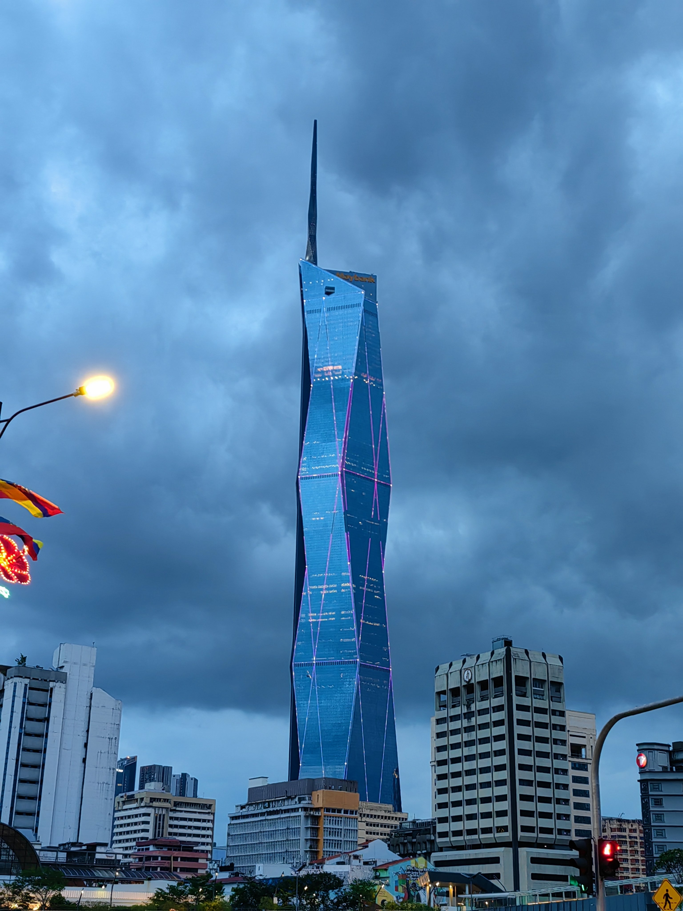
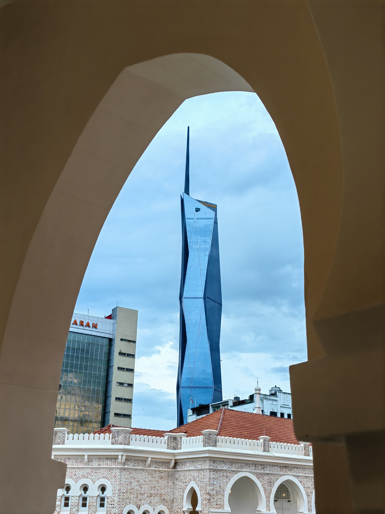
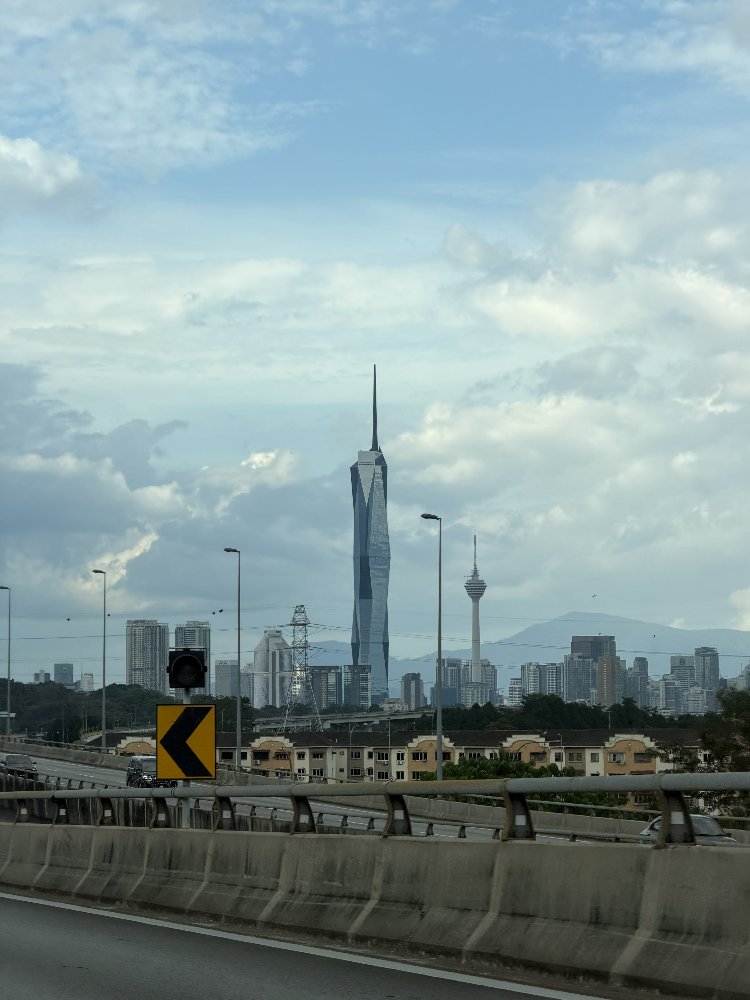
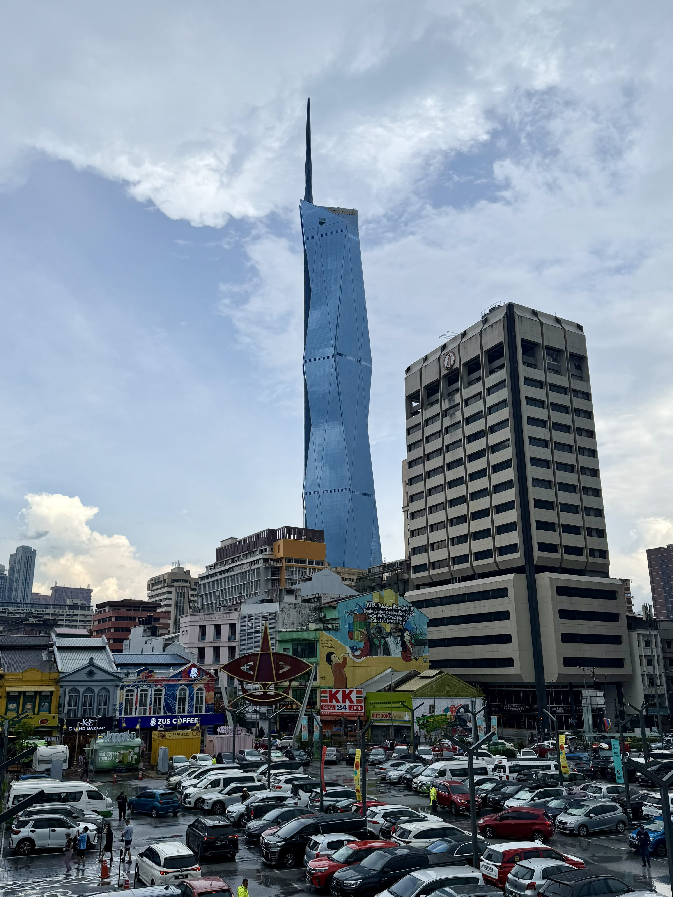
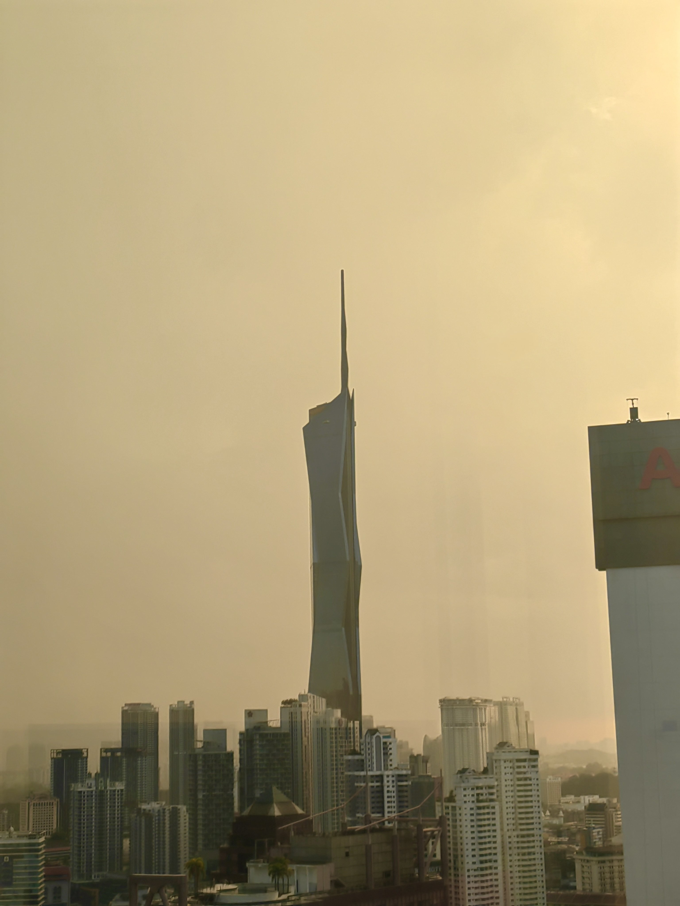
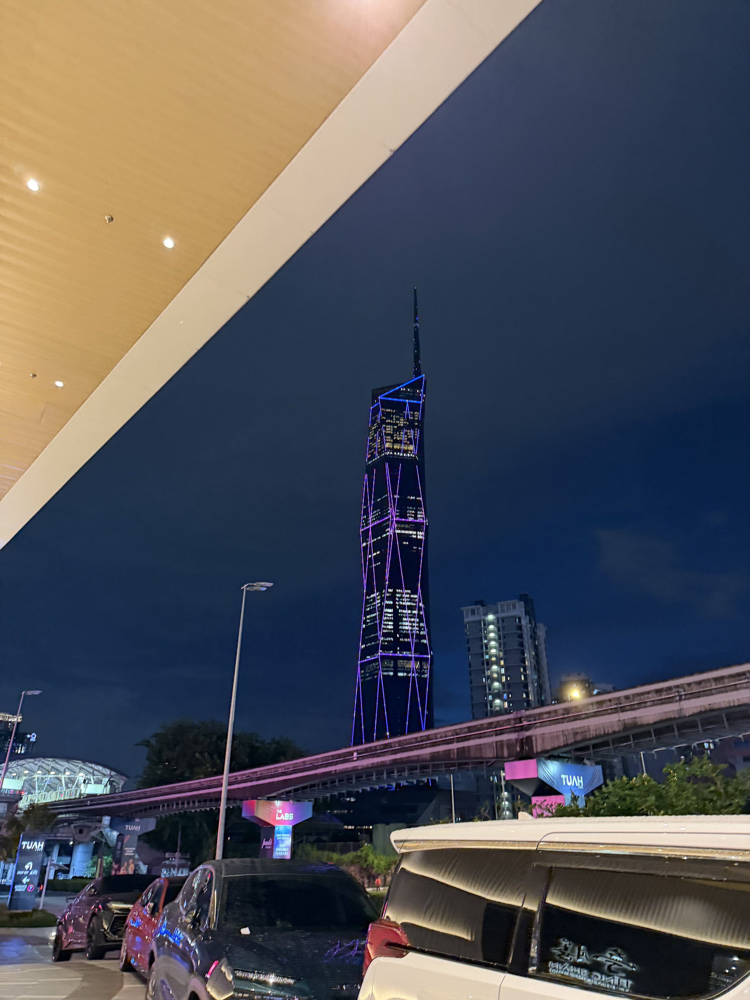

懒得选图喵，都发出来叭😵💫
呜呜缩略图依旧竖构图杀手喵😡气死啦喵（打滚）咱就非得一次只发两张嘛…以后选图的时候要考虑的更多了呜呜🥹
要是能选择让图片横向滚动排列就好了…就像编辑界面里那样😇

呜呜缩略图依旧竖构图杀手喵😡气死啦喵（打滚）咱就非得一次只发两张嘛…以后选图的时候要考虑的更多了呜呜🥹
要是能选择让图片横向滚动排列就好了…就像编辑界面里那样😇






🇲🇾🥰～
Merdeka 118～很喜欢它的设计，图一这个角度在咱心里超越了绝大多数摩天大厦喵🥹
为什么呐…可能咱的审美不太喜欢玻璃幕墙质的大段连续曲线曲面吧，而它这样平面拼接成多面体的形态更能展现钢铁造物的硬朗～同时还给咱了一种…晶体感，从平视角度可以总观出恰到好处的曼妙😘 https://t.co/JnNkoPYxrH
Merdeka 118～很喜欢它的设计，图一这个角度在咱心里超越了绝大多数摩天大厦喵🥹
为什么呐…可能咱的审美不太喜欢玻璃幕墙质的大段连续曲线曲面吧，而它这样平面拼接成多面体的形态更能展现钢铁造物的硬朗～同时还给咱了一种…晶体感，从平视角度可以总观出恰到好处的曼妙😘 https://t.co/JnNkoPYxrH